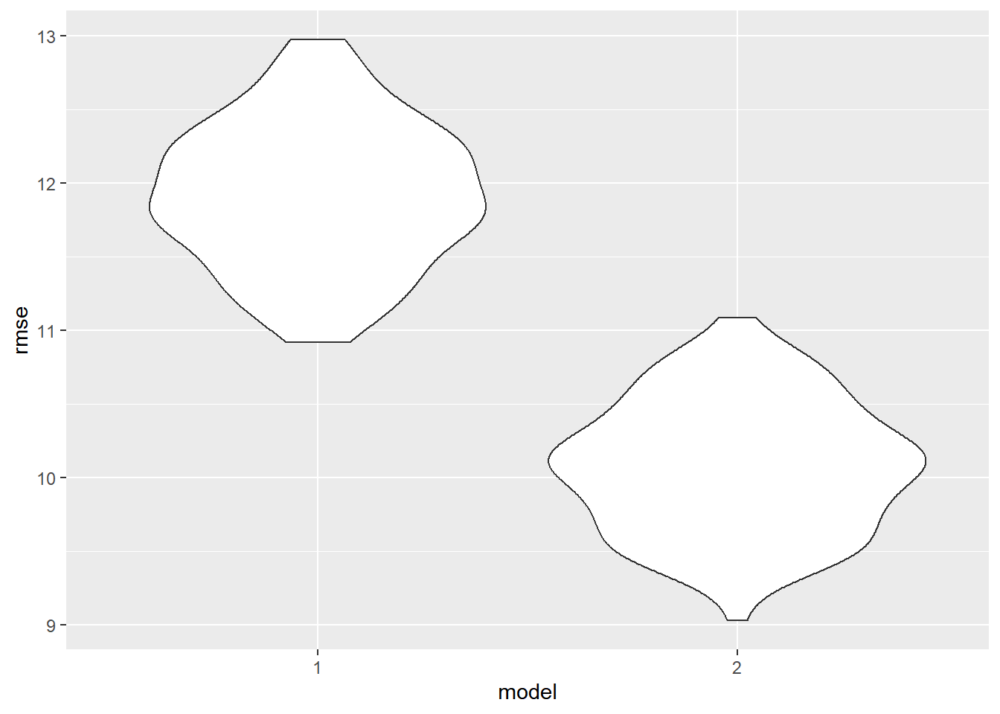

#linear regression model testing for confounding
model3 = lm(formula = bachelors ~ median_income + n_museums, data = museum_edu_df)
# Creating Regression Model Table
model3 |>
broom::tidy() |>
select(term, estimate, p.value) |>
knitr::kable(digits=10)| term | estimate | p.value |
|---|---|---|
| (Intercept) | -7.3496990801 | 0 |
| median_income | 0.0004745601 | 0 |
| n_museums | 0.2448004363 | 0 |
E(bachelors) = β0 + β1(median_income) + β2(n_museums)
Intercept (Estimated Constant): The intercept is -7.350. This represents the estimated percentage of individuals with a bachelor’s degree when the number of museums (n_museums) is zero and median income (median_income) is zero.
Statistical significance: The p-values associated with each coefficient are very small (<2×10^−16), indicating that both median_income and n_museums are statistically significant predictors of the response variable.
Coefficient for n_museums: The coefficient for n_museums is 0.245. his represents the estimated change in the percentage of individuals with a bachelor’s degree for each additional museum, adjusted for median income. In the unadjusted model, the coefficient was: 0.17138. There is a 30% difference between the crude and unadjusted models, which is greater than 10%, signifying that income does infact confound the relationship between high educational attainment and amount of museums in a zipcode.
cv1_df =
crossv_mc(museum_edu_df, 100)
cv1_df |>
mutate(
mod_1 = map(train, \(df) lm(bachelors ~ n_museums, data = museum_edu_df)),
mod_2 = map(train, \(df) lm(bachelors ~ median_income + n_museums, data = museum_edu_df))) |>
mutate(
rmse_1 = map2_dbl(mod_1, test, \(mod, df) rmse(model = mod, data = df)),
rmse_2 = map2_dbl(mod_2, test, \(mod, df) rmse(model = mod, data = df))) |>
select(starts_with("rmse")) |>
pivot_longer(
everything(), names_to="model", values_to="rmse", names_prefix="rmse_") |>
ggplot(aes(x=model, y=rmse)) + geom_violin()
The model excluding income has a much higher root mean squared errors (RMSE) value than the model including income.
#linear regression model testing for confounding
model_int = lm(formula = bachelors ~ median_income + n_museums + median_income*n_museums, data = museum_edu_df)
# Creating Regression Model Table
model_int |>
broom::tidy() |>
select(term, estimate, p.value) |>
knitr::kable(digits=10)| term | estimate | p.value |
|---|---|---|
| (Intercept) | -2.2849540454 | 6.528e-07 |
| median_income | 0.0002901590 | 0.000e+00 |
| n_museums | -2.3996940174 | 0.000e+00 |
| median_income:n_museums | 0.0000986444 | 0.000e+00 |
E(bachelors) = β0 + β1(median_income) + β2(n_museums) + β3(median_income*n_museums)
The significant interaction term in the model implies that the effect of n_museums on bachelors is not constant across all levels of median_income. In other words, the relationship between the number of museums (n_museums) and the likelihood of having a bachelor’s degree (bachelors) is influenced by the level of median_income.
cv2_df =
crossv_mc(museum_edu_df, 100)
cv2_df |>
mutate(
mod_1 = map(train, \(df) lm(formula = bachelors ~ median_income + n_museums + median_income*n_museums, data = museum_edu_df)),
mod_2 = map(train, \(df) lm(formula = bachelors ~ median_income + n_museums, data = museum_edu_df))) |>
mutate(
rmse_1 = map2_dbl(mod_1, test, \(mod, df) rmse(model = mod, data = df)),
rmse_2 = map2_dbl(mod_2, test, \(mod, df) rmse(model = mod, data = df))) |>
select(starts_with("rmse")) |>
pivot_longer(
everything(), names_to="model", values_to="rmse", names_prefix="rmse_") |>
ggplot(aes(x=model, y=rmse)) + geom_violin()The model with an interaction term between bachelors and median income has a slightly lower RMSE value than the model without an interaction term. Ultimately, the model with interaction terms appears to be the best model.